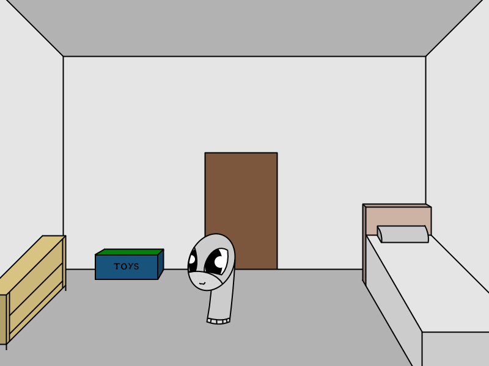
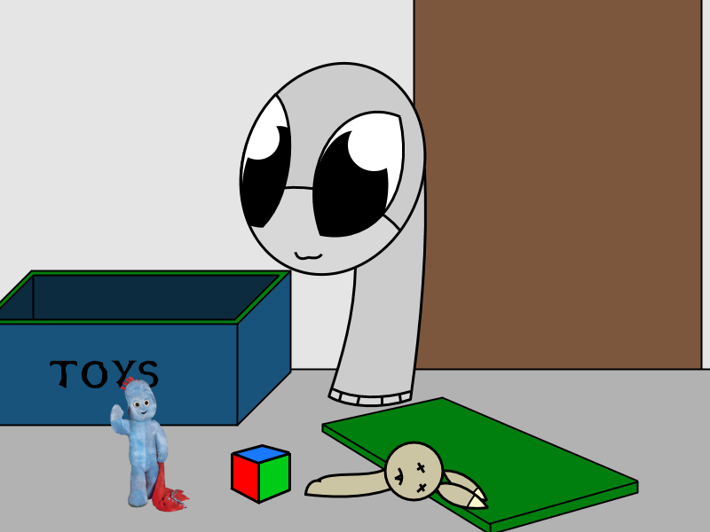
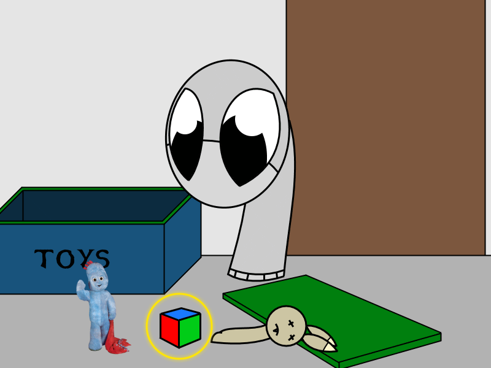
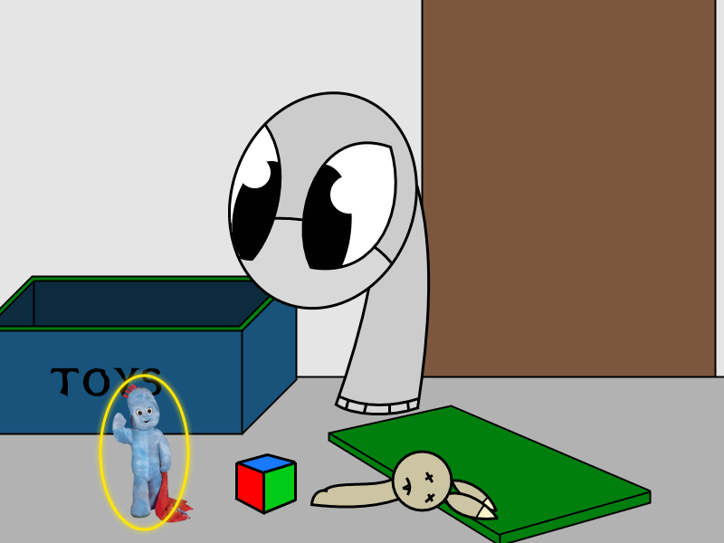
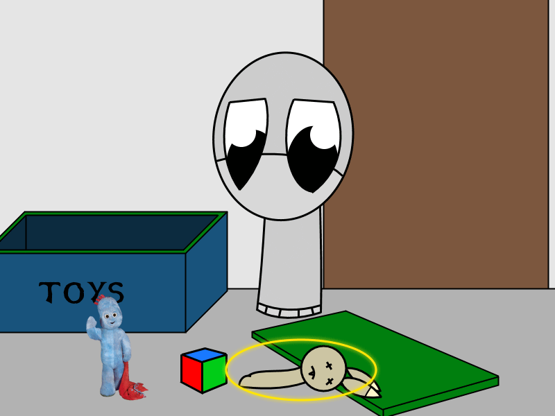
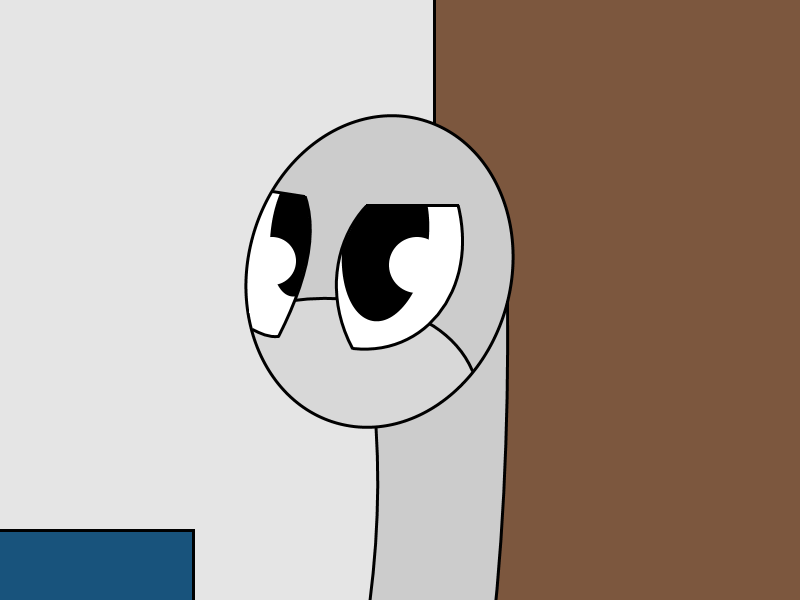

Socks Works. A comic about socks!
You're wondering when dinner's coming. Your Step-father didn't tell you when it'll be so you'll try to come up with something fun to do.
Maybe you should think about who you are or look around the room?
Gabriel said--
Check the toy box

(Squeek!) You love that idea! After all your toys where your friends since your step-father locked you in your room!

Look here! These are your best friends!
The blue one with the blanket is called Lazlo. The color cube is called Hybrido. And the rabbid plush is a homeless hobo that you don't
know the name of.
They where with you for the last 3 years of isolation! A bound was expected to grow between you all!
gorbino said--
Look at the fourth wall
There's nothing there..
loomhigh said--
What does Hybrido do for a living? Seems like a bit of a square

That's a really good question. You don't know what he does in the toy box but you know for sure that he's a master at existing. And he's
also a god of mind tricks.
Maybe you shouldn't interfere with his private life. He's the best of the 4 of you after all.
Wiwian said--
what can you tell us about Lazlo

Lazlo was based of his creator who gave you him when you where depressed. You recal remembering him being called 'Iggy' but that's unclear
since you stayed home for 3 years without going out at all. (Let alone see the sun)
Lazlo has the same traits as his creator, friendly and talkative. At least that's how Lazlo was so you assume that's how the creator is as
well.
Wiwian said--
is the bunny doing alright? they don't look very...well
Lightecho said--
Is the hobo... living?

Don't worry about him. It's just his eyes that are dead. Perhaps his vocal cords as well since he's mute a lot. It's kinda hard not to feel
sorry for him. The smell he's giving might have killed his nasal passage as well.
glizzy lizzy said--
Put the rabbit hobo back, i dont like him.

That's very rude to say. But brave. You can't even tell your step-dad to let you out yourself since you're a little sock.